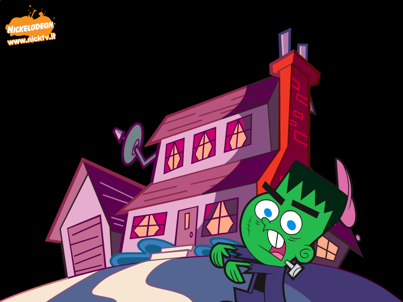

The Fairly OddParents Screensavers

The Fairly OddParents Screensaver (nickindia.com)

DOWNLOAD
 .exe file zipped (997 KB)
.exe file zipped (997 KB)
Due fantagenitori Halloween Screensaver (nicktv.it)

DOWNLOAD
.exe file zipped (754 KB)
Due fantagenitori Lucky 7 Screensaver (nicktv.it)

DOWNLOAD
.exe file zipped (2.88 MB)
Os Padrinhos Mágicos/Los padrinos mágicos Screensaver 1 (jetix.com.br/jetixtv.com)

Note: This is a 16-bit program and requires special programs to install on 64-bit Windows, such as otvdm.
DOWNLOAD
.exe file zipped (jetix.com.br) (776 KB)
.exe file zipped (jetixtv.com) (780 KB)
Os Padrinhos Mágicos/Los padrinos mágicos Screensaver 2 (jetix.com.br/jetixtv.com)

Note: This is a 16-bit program and requires special programs to install on 64-bit Windows, such as otvdm.
DOWNLOAD
.exe file zipped (Windows) (jetix.com.br) (872 KB)
.sit file (Mac OS 9) (jetix.com.br) (476 KB)
.sit file (Mac OS X) (jetix.com.br) (1.12 MB)
.exe file zipped (Windows) (jetixtv.com) (870 KB)
.sit file (Mac OS 9) (jetixtv.com) (470 KB)
.sit file (Mac OS X) (jetixtv.com) (1.11 MB)